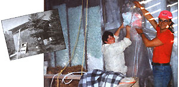
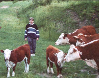

Country Lore
Keeping the coop warm; and MOTHER welcomes out youngest Lore contributor.
Recycled Insulation
My wife and I would like to tell you what we did to insulate our chicken coop. We knew from the beginning that we couldn't spend much money on this project, but the answer came to us in our Christmas gifts-Styrofoam packing chips! After we saw an ad in our local paper we received a couple of good sources. We loaded bag upon bag into our truck and took them home. We vapor barriered ,starting from the floor up stapling a few feet at a time. Filling the spaces between the studs was quick and easy because the chips poured straight out of the bags. We then used salvaged paneling and placed them backwards to use the unmarked mahogany as sheathing. Voila! A cozy poultry palace and less garbage in a landfill site. It takes an amazing amount of this packing material (in our case a 10' x 13' building) to be used in this fashion.
-Pierrette & C.J. Miller & family South Gillies, Ontario
My name is Scott Hixenbaugh and I am 12 years old. I am writing to this magazine because I like your articles. I want to tell you about our farm. We have cows, cats, dogs, chickens, and pigs. We do not own a lot of today's things, such as a riding lawn mower. We rough it around here. We also grow a garden that we grow every year. We grow carrots, tomatoes, beets, potatoes and other vegetables. Mother Earth News gives us ways to do things such as how we grow our potatoes. The way we grow them is we mix the dirt and put the seed potatoes on the ground, put fertilizer on them, and spread hay on them 2-3 feet high. That way we know as it compresses it will still be pretty thick.
I want to thank you for writing such a good magazine.
-Scott Hixenbaugh Burton, West Virginia
Here's a way to make a dreary household chore a little bit easier. I remove tarnish from silver flatware, pitchers, candy dish es, and jewelry by placing them in a bucket of lukewarm salt water to which I've added small pieces of aluminum foil. After letting the mixture stand overnight in a ventilated area (it'll give off a sulfur odor), wash the silver next morning with sudsy water and dry carefully. It will all come out looking like new.
-Sally Halfaker St. Charles, Missouri
When one of my children was sick, I found it difficult to get my household chores done with a fussy patient constantly requiring food, drink, puzzles, the radio or just a bit of company. But I solved the problem with the aid of an alarm clock. I set the alarm for 30 minutes, and used that time to read to (or otherwise entertain) my child. Then, when the alarm went off, I would reset it for another 30 minutes, with the understanding that my child would amuse himself or herself and save their requests so I could do some housework. When the alarm rang again, I'd return for 30 more minutes of play. The technique worked well, helping me get my work done and avoid yelling the typical too-busy mother response: "In a minute!"
-Lilian Reynolds New Orleans, Louisiana
If you've been unsuccessful in trapping mice, try using cotton soaked in lard or bacon grease. Such bait will have a double attraction for the rodents. They like lard (or any animal fat) as food and will be tempted to use the cotton for their nests. Furthermore, the soaked puffs are easily fastened to the trap's bait pan.
-Russell Skinner Central Point, Oregon
Leaving water that you use for your plants out for a day or so will eliminate some of the chlorine and your plants will be the healthier for it.
If you can't find anything in the house to remove oil from your hands after working on your car, cut a piece of margarine or butter and rub thoroughly between your hands. The grease will come right off, and then you can wash with regular soap.
-Keith Brookes Orono, Maine
Homemade cupcakes take on an added delight when they're baked in ice cream cones. I stand the cones upright on an ungreased cookie sheet, spacing them about 2" apart. I then fill each mold half full with cake batter, and bake them for 10 to 15 minutes (or until they're done). Once the confections have cooled, I either frost the tops, or add a scoop of ice cream to each one! They're a hit at children's parties and don't dirty dishes or leave a bunch of paper wrappings to clean up.
-Mary Seigert Tucson, Arizona
Cold weather is almost here, and outdoor enthusiasts might be advised to forget a high-tech portable fire starter and remember a trick that my grandfather taught me years ago. He would dip the heads of a dozen "strike-anywhere" matches in melted paraffin wax and then roll up the matches in a 10" x 10" piece of cloth. The resultant "package" was then dipped into the paraffin and allowed to dry. The waxy bundle can be carried in a pack or pocket. The matches will stay dry through rain, snow, sleet, or worse, and the wax-coated cloth makes a fine fire starter.
-Barry Atkins Seattle, Washington
Editor's Note: In the June/July issue (#144), "Lore" included a short item by Walter Brooks of Bermidji, MT, in which he describes a way to recycle water from furnace condensation and use it for laundry purposes. MOTHER has since learned (principally from Thomas Miller of E. Lansing, MI) that such condensate often contains levels of hydrochloric and sulfuric acid in levels sufficient to cause damage to clothing. MOTHER would like to thank Mr. Miller for his words and encourage readers to curtail their recycling of furnace condensate in the future.
|
 Pierette and C.J. Miller making a warmer home for their chickens. |
 |
|